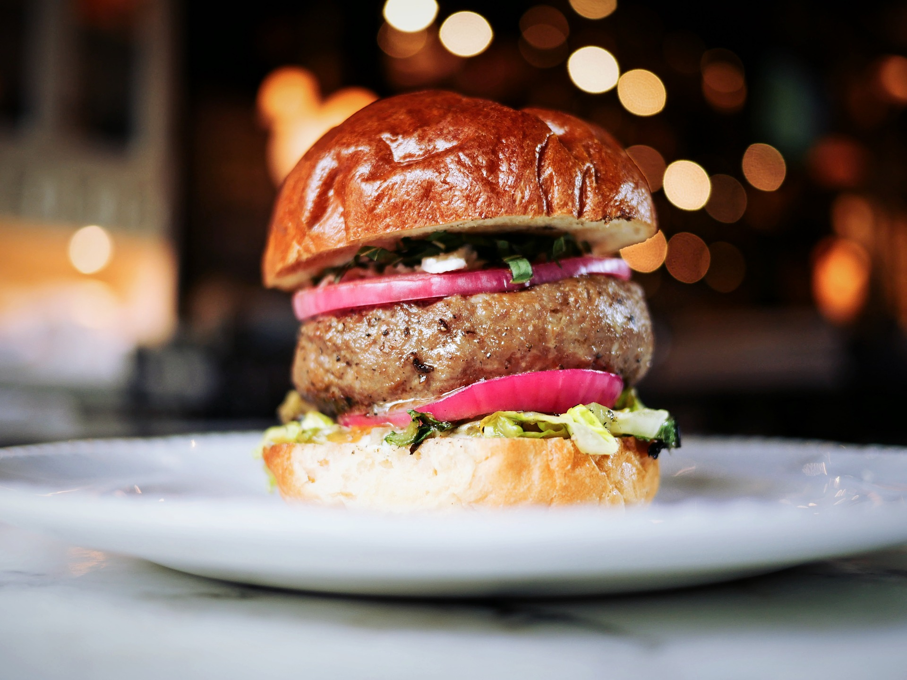

LIVE MUSIC CRAFT BEER & BURGERS

Louisiana blues is a genre of blues music that developed in the period after World War II in the state of Louisiana. It is generally divided into two major subgenres, with the jazz-influenced New Orleans blues based on the musical traditions of that city and the slower tempo swamp blues incorporating influences from zydeco and Cajun music from around Baton Rouge.
Stew's Bar is one of Londons most popular live music bars. Inspired by the dive bars of the Deep South, live music performances at Blues Kitchen Camden consist of soul, jazz and rock and roll played by some world famous musicians, including Seasick Steve, Mystery Jets and Dirty Pretty Things.